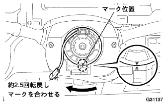
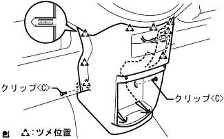

Installation of column shift lever |
| 1. Steering column ASSY installation |
 |
Insert the steering column ASSY from the front and clamp the steering column clamp to the instrument panel rein horsement ASSY.
Attach the steering column ASSY with three bolts.
The match between the steering interim day is No.3 and the steering sliding yoke together and attach the mark.
Steering sliding York bolts at both ends.
Connect each connector.
Clamp the wire harness to the steering column.
| 2. Check the front tire straight state |
| 3. Column Shift Parking Lock Cable ASSY installation |
With bolts, tentatively attach the parking lock cable (pedal side).
Connect the parking lock cable to the column ASSY.
Parking lock cable inspection / coordination (guidelines)
See) Bolt is tightened later.
| 4. Column Shift Transmission Control Cable ASSY installation |
From the engine side through the control cable and attach the bracket with a nut.
In the clip, attach the control cable to the control cable bracket.
With a nut, connect the control cable to the transxle.
 |
Attach a new clip to the cable bracket and attach the control cable to the column ASSY.
Put the shift lever in the N range and press to the P range side, pull the control cable end part, and attach the control cable to the Velcank with a nut with the backlash eliminated.
| 5. Steering column hole cover plate installation |
 |
Attach the steering column hole cover plate with two clips.
| 6. Wind shield wiped switch Assisted |
 |
Attach a windshield wipas switch by adjusting the claws.
Connect the connector.
| 7. Mounting headlamp Dimamwrinking ASSY |
 |
Attach the claws and attach the horn lamp damus tsuzuchi assy.
Connect the connector.
| 8. Spiral cable SUB-ASSY installation |
Make the turn signal Sutsuchi a nyutoral position.
Attach a spiral cable by combining three places of claws.
Connect a connector and connector for air bats.
| 9. Spiral cable centering |
Confirm that the IG Suitsu is OFF (Lock).
Confirm that the minihana stormy of the crosster has been removed.
Turn the spiral cable until the counterclockwise direction is wandered.
|  |
Return 2.5 turns back in the clock direction from the swinging position of the spiral cable, and match the center mark in the figure.
| 10. Shift lever position inspection |
The shift lever shifts from N range to each range.At this time, the shift lever can be operated smoothly, moves moderately in each range, and confirms that the position indicator is displayed and the shift lever is matched.
Make sure that you can shift to each range of P, R, and L only when the shift lever is pulled to the front.
Start the engine and shift to the D range. The vehicle progresses forward, and when the R range is shifted, a buzzer sounds and the vehicle retreats.
| 11. Shift lever position adjustment |
Remove the nut of the control shaft lever and separate the control cable.
Turn the control shaft lever until it stops in the counterclockwise direction, and then return to the position (N range) in two steps.
 |
As shown in the figure, the shift lever is shifted to the N range, pressed against the R range side, attach the control cable and tighten with a nut.
After adjustment, check the operation condition and operation.
| 12. Shift lock operation inspection |
Make the shift lever P range.
Make the ignition switch Lock.
After checking that the shift lever is operated, it is not possible to shift other than the P range, then check that the ionition switch can be shifted other than the P range when the brake pedal is stepped on.
| 13. Key Into Rock operation inspection |
Make the ignition switch ACC.
Step on the brake pedal and shift the shift lever other than the P range.
Inspect that the ignition key cannot be turned to the Lock position.
The shift lever is shifted to the P range, the ignition key is turned to the Lock position, and the ignition keys are removed.

| 14. Installation of the steering column cover |
 |
Attach the steering column cover with three screws.
| 15. Steering wheel assessed |
The steering wheel ASSY match mark is attached with a nut according to the steering main shiap ASSY matching mark.,,
| 16. Steering wheel position inspection |
| 17. Horn button ASSY installation |
Tighten two torx bolts using a Turksket wrench (T30).
| 18. Installment panel finish panel LWR installation |
 |
Connect each connector and a food optic, combine the five claws and clip <a> 2 pieces.
| 19. Installment panel finish panel LWR CTR installation |
|  |
Attach the instrument cup holder with three screws.
Connect the connector of the power outlet socket.
Combine the eight claws and attach the instrument panel finish panel LWR CTR with two clips <c>.
| 20. Battery Mina Star Minal Connection |
| 21. Airbag Warnin Grand Point Inspection |
When the IG switch is turned on, check whether the warnin gland lamps light or blink.
After about 6 seconds, make sure that the warnin gland will turn off.